贡牌：茶工录
西湖龙井茶包装设计
GONGPAI: TEA CRAFT RECORD
以制茶工序为叙事主线，将采、炒、揉、烘等过程转译为包装结构与图形
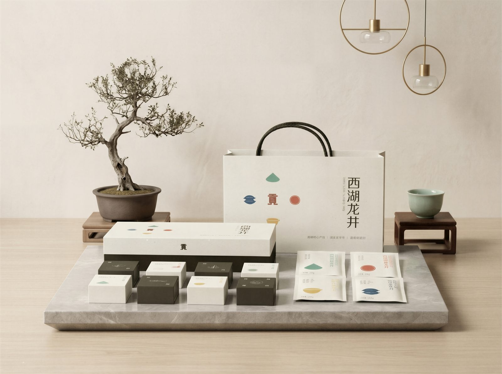
设计说明
· 叙事性包装逻辑
以"工序递进"为核心线索，将西湖龙井的处理工序中提取出采青-摊青-杀青-辉锅四道特色关键工序，转化为贯穿包装的叙事主线，打破传统茶包装同质化问题，让非遗工艺从"背景介绍"变为用户可感知的体验过程
· 全链路体验闭环
构建"外盒识序-内盒分级-茶包寻味"的完整品茗体验：外盒以工序图标点明主题，内盒以黑白区分产品等级，独立茶包与工序符号一一对应，让用户随工序递进感知龙井从清鲜到醇厚的风味变化，实现"以序为录，还原龙井匠心"的设计初心
· 非遗的现代转译
摒弃复杂的工艺插画，以极简几何符号+低饱和色彩的形式转译传统炒茶技艺，既保留了非遗的文化内核，又适配现代极简审美，为老字号品牌注入年轻化表达，让非遗工艺更易被年轻群体感知与接受
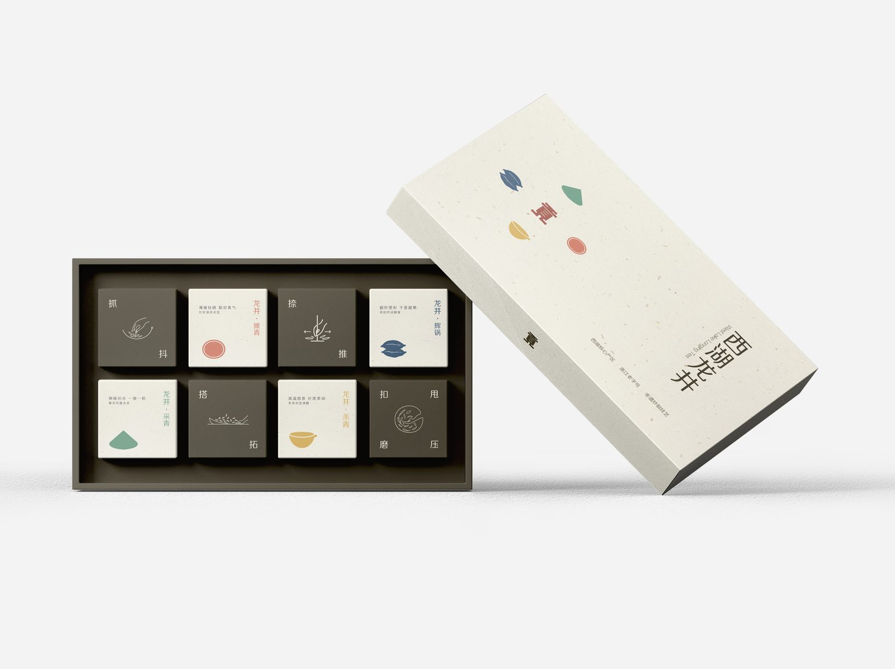
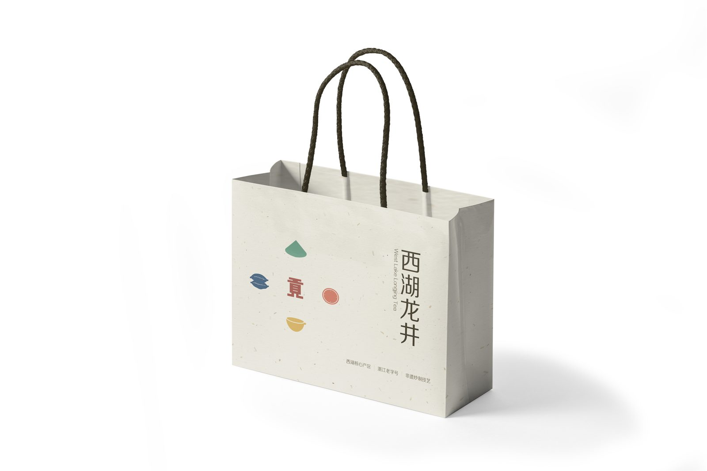
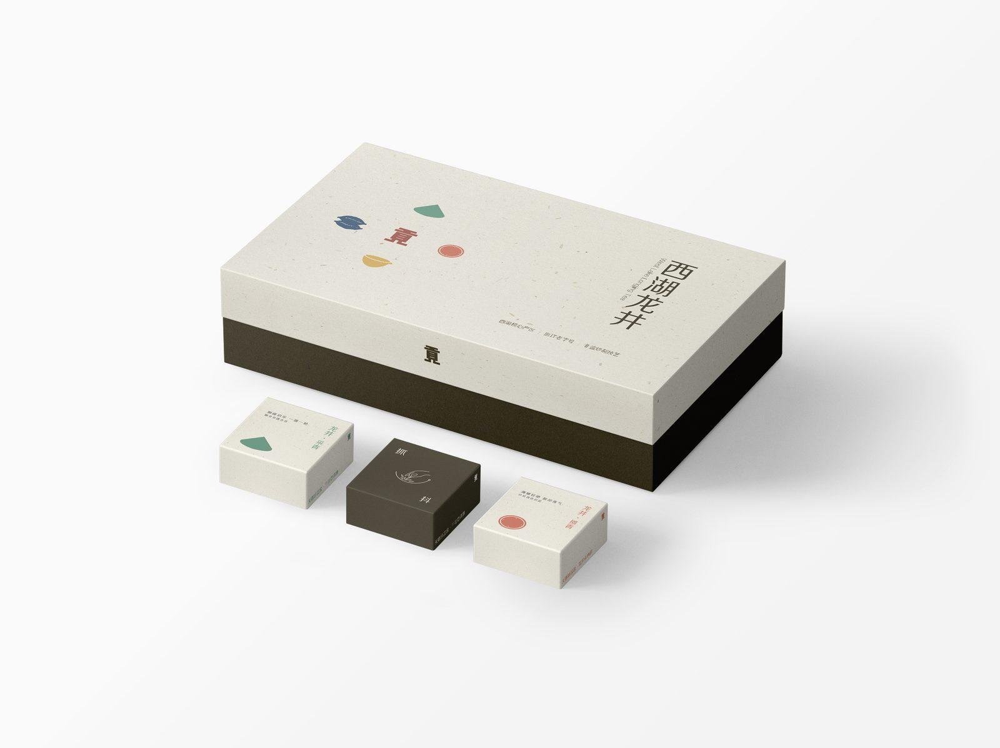
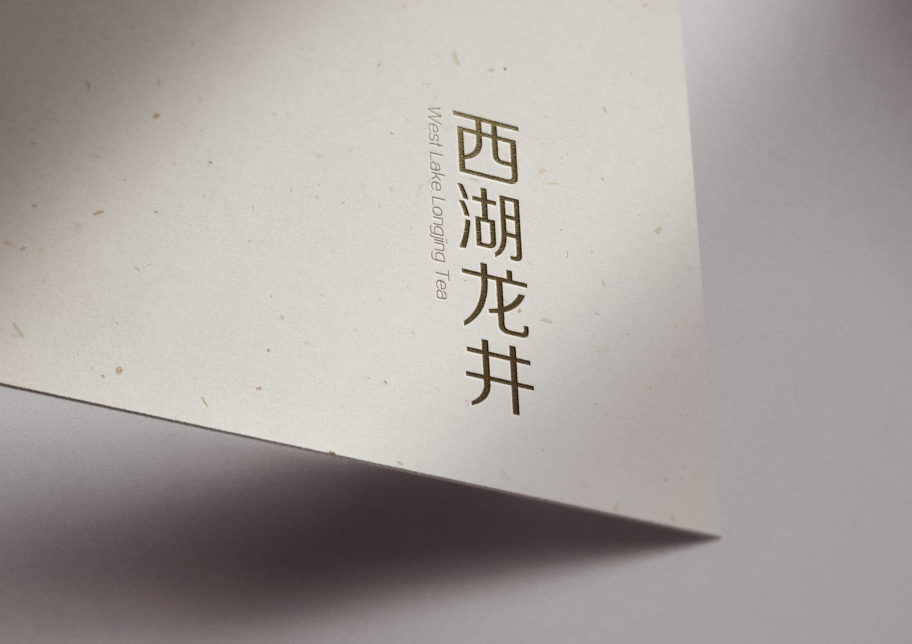
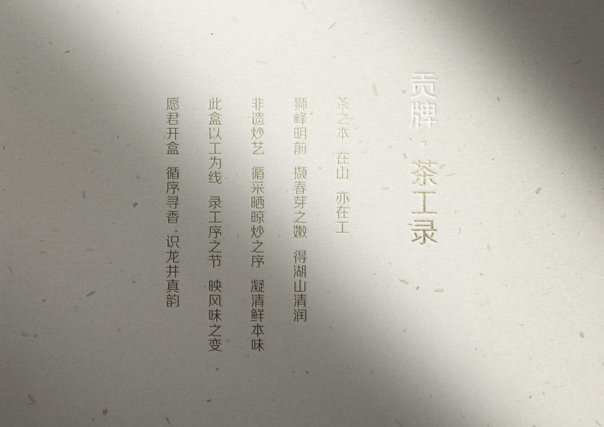
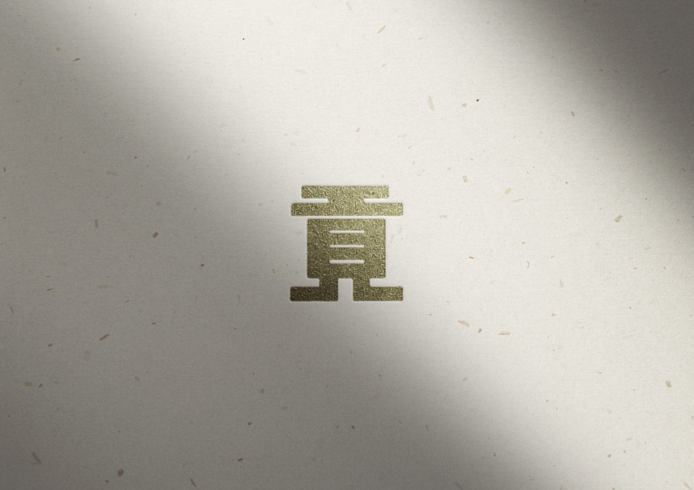
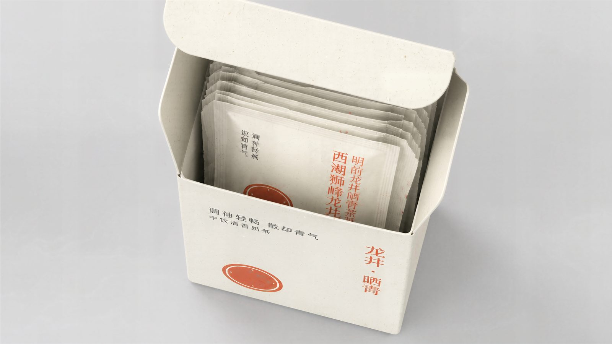
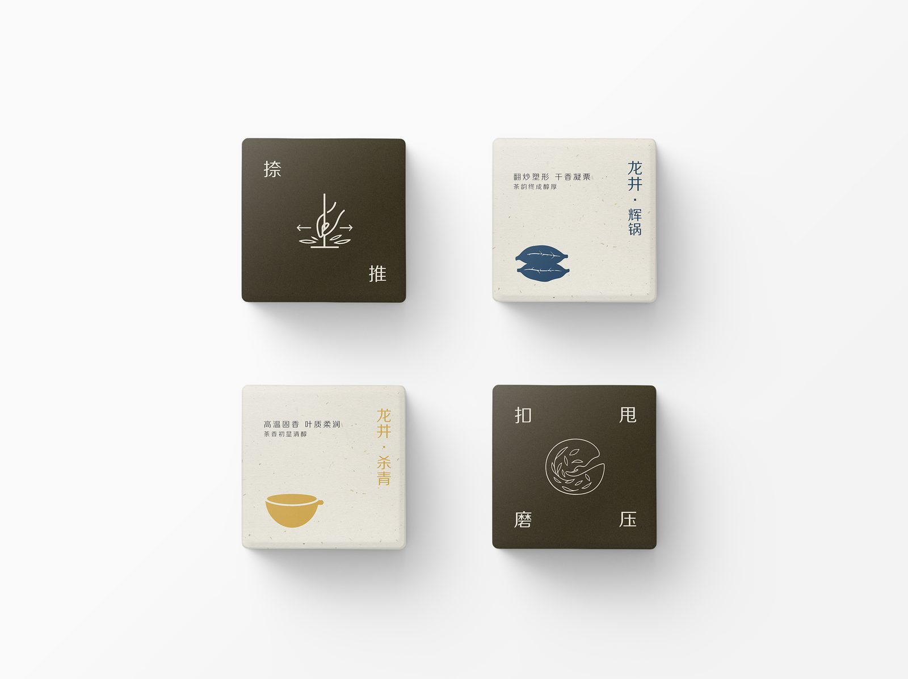
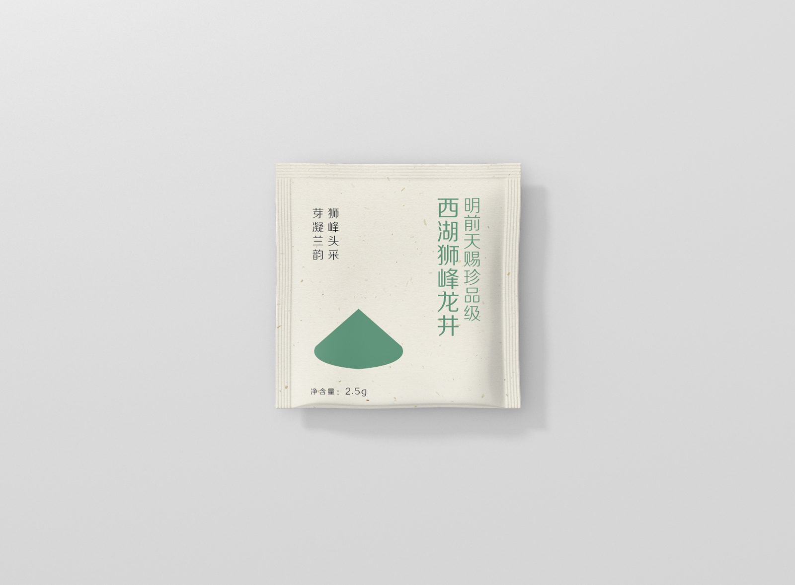
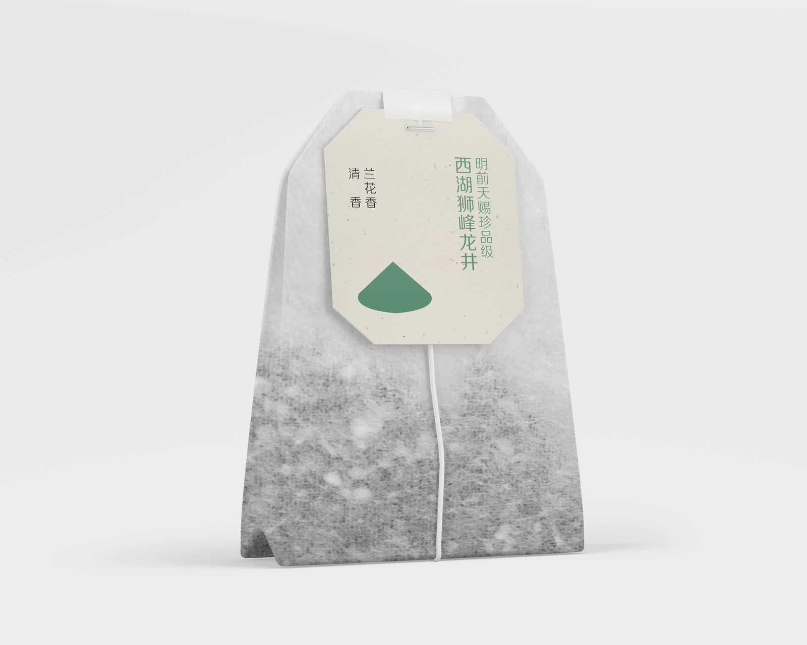
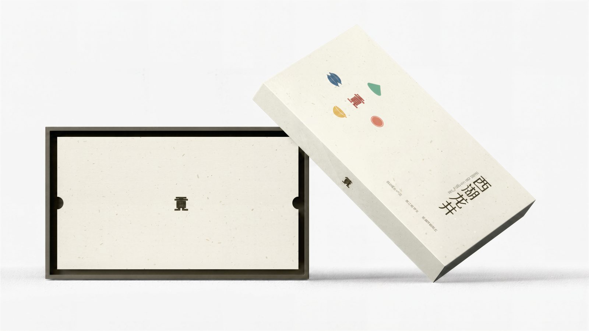
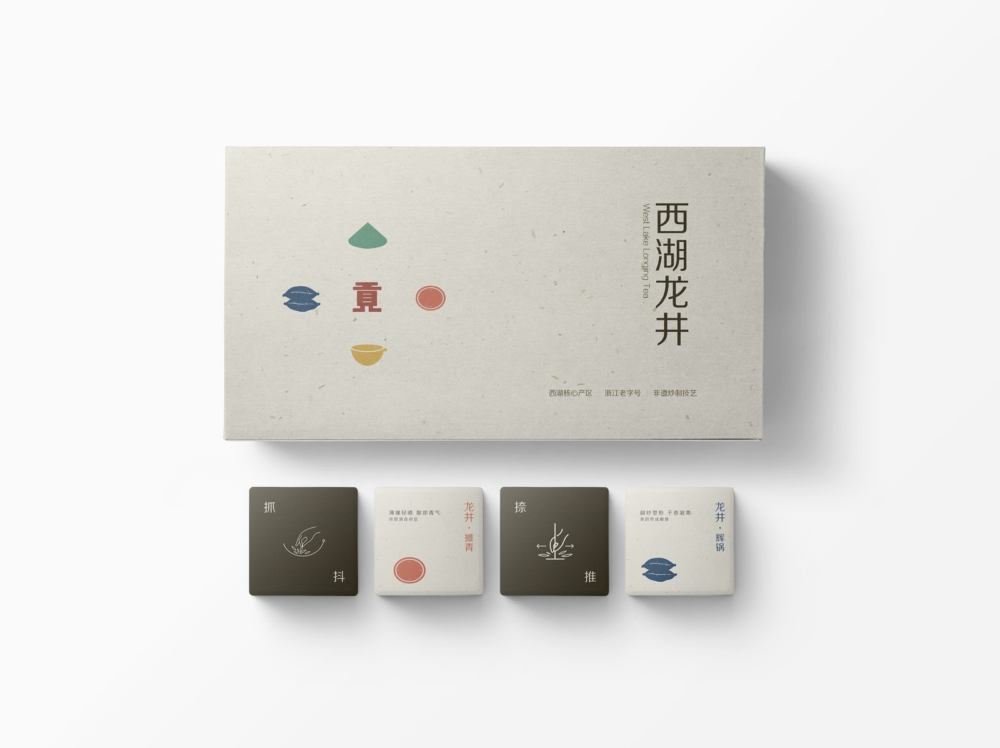